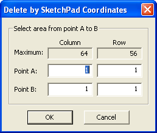
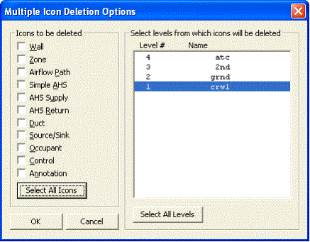

菜单命令： Tool → 删除依据 R 埃吉恩
工具栏按钮：

菜单命令： Tool → 删除依据 Box
工具栏按钮：
菜单命令： Tool → 删除依据 C 坐标

从 SketchPad 中删除建筑组件有两种常用方法：一次一个（单个组件）或成组（多个组件）。 CONTAM 必须位于 n 正常的 SketchPad 模式以删除图标。
单个组件删除
要删除单个建筑组件，您只需单击 ( LMB ）在图标上或使用箭头键将插入符号移动到该图标，然后按 删除 键或使用 Edit → D 埃莱特 菜单命令。
多组件删除
ContamW 提供在单个删除操作中删除多个建筑组件的功能。这是通过首先使用三种方法之一在 SketchPad 上选择一个房间，然后激活 Edit → D 埃莱特 菜单命令（或按 删除 键）。
使用以下三个删除工具之一选择要使用的 SketchPad 房间：

然后按 删除 显示如下所示的“多个图标删除选项”对话框。使用复选框选择要删除的图标类型，选择要删除图标的级别，使用 Ctrl 和 Shift 键从列表中选择多个级别，然后单击“确定”按钮执行删除。

图 - 多个图标删除选项对话框
NOTE: 某些删除操作将使项目文件中项目之间的现有关系无效。这可能导致 ContamW 无法保存项目文件和/或 ContamX 无法对项目文件执行模拟。例如，删除占用者计划引用的房间将阻止 ContamW 保存项目文件。但是，当您尝试保存时，将会提供一条错误消息来通知您。为此， 在执行主要删除操作之前，您应该始终创建备份副本。
网络删除（管道和控制）
您可以使用单个命令删除一组连接的管道或控件。突出显示网络中您要删除的任何图标并选择 Edit → 删除 N 网络 从菜单中或使用 Ctrl+删除 键盘快捷键。如果删除控制网络，系统可能会提示您是否删除或取消定义引用正在删除的网络的虚拟节点。